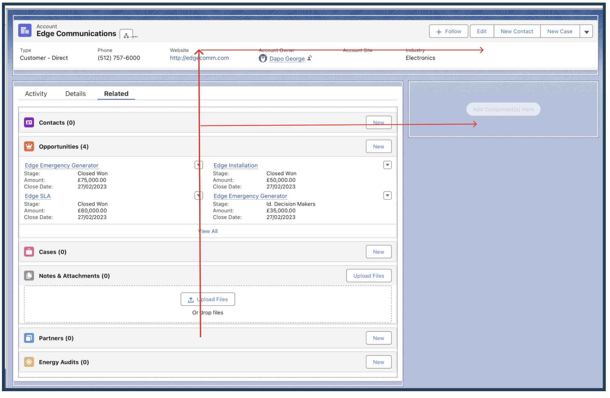
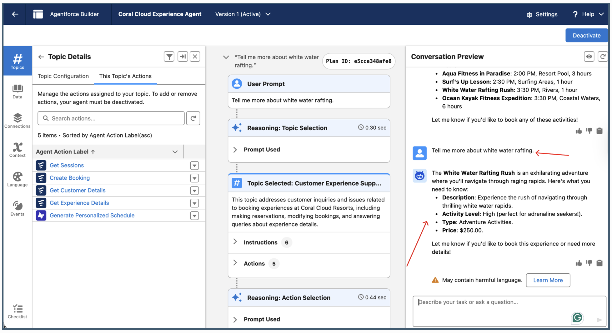
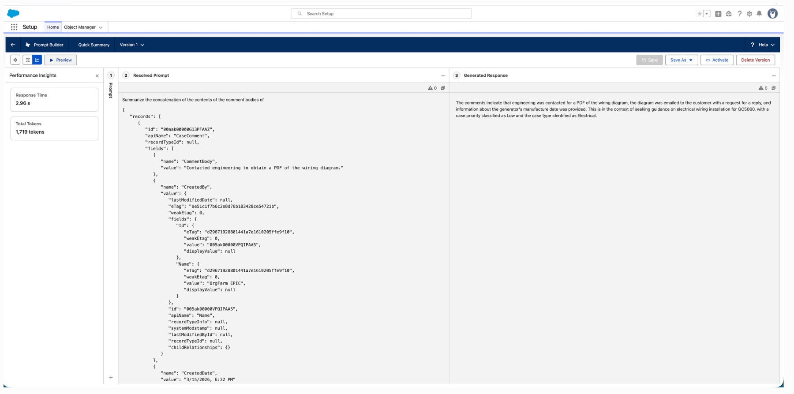

I’m Dapo George, I turn dense, high-stakes enterprise tools into interfaces that feel calm and obvious. From Salesforce record pages and Agentforce AI to service blueprints and fintech data, I design the systems beneath the screen.
A full end-to-end fintech case study bridging the financial trust gap in cross-border remittance to Sub-Saharan Africa. Research, a service blueprint, wireframes, hi-fi screens, an interactive prototype, plus security and accessibility.
Open the 6-part case study →
Redesigning the Account console and scaling data with Dynamic Forms, leading with action, on every device.
2 projects →
Designing grounded, multilingual AI agents, from prompt templates and model tuning to live conversation flows.
2 case studies →
Turning LLMs into reliable UX components, grounded summaries, context-aware content, and flow-powered orchestration.
3 case studies →
Experiments beyond the screen, a Deliveroo service blueprint, fintech data visualisation, and a responsive ecosystem.
3 methods →With a Master’s in User Experience Engineering, I work across service, product and interaction design, bridging the gap between what a system does and what a person needs from it.